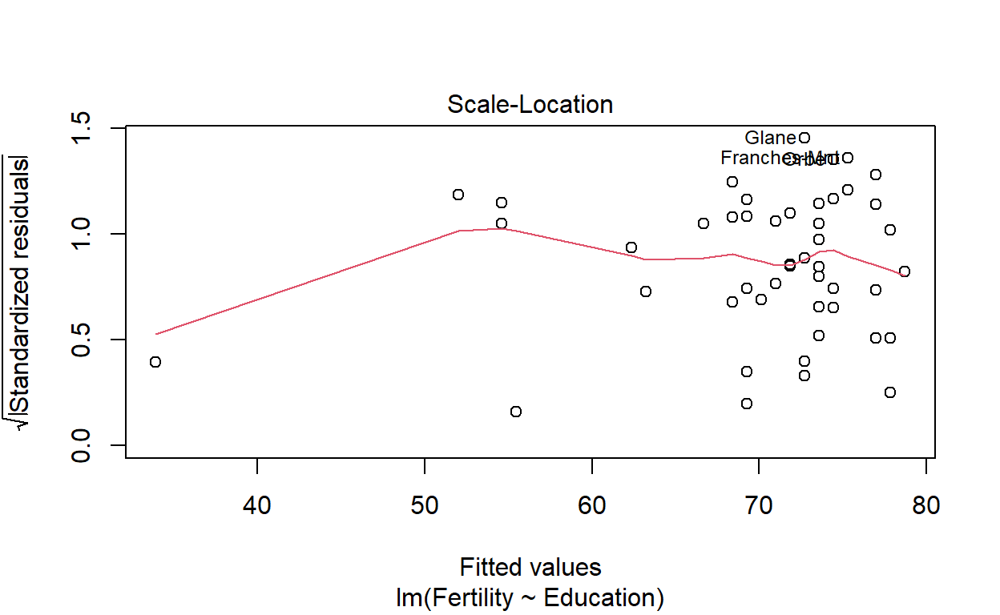
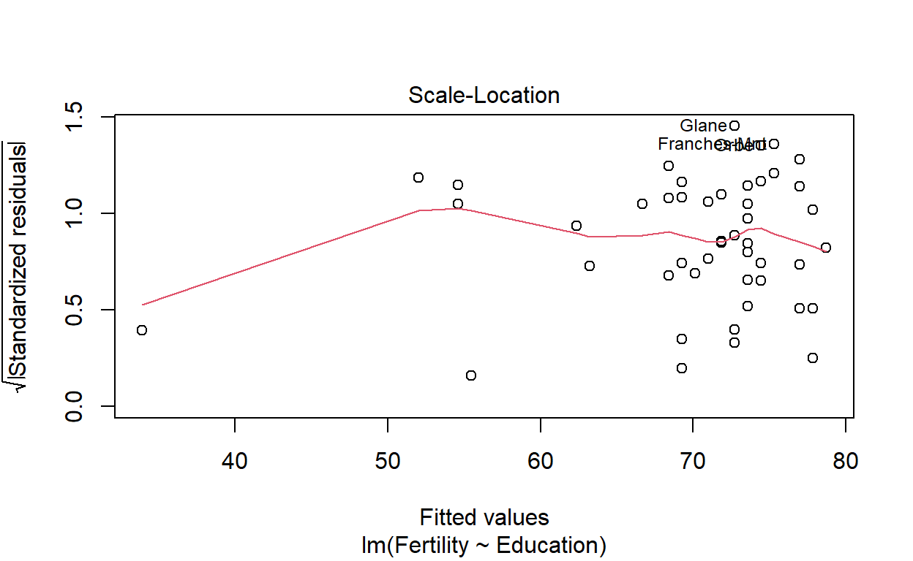

Introduction
One of the most common uses for R is investigating relationships
between numerical variables and running regression models. The way that
R handles running models can be a bit different from other statistical
software might do it. In R, we create a model object,
which contains the executed model, then use the summary
function to access the relevant information from the model we just ran.
This means it typically takes a line of code to run a model and then a
separate line of code to see the results, so make sure to pay close
attention to how we get the information we need.
In this tutorial, we will examine the relationship between
Fertility (standardized fertility measure) and
Education (proportion of persons having education beyond
primary school) as well as the relationship between
Fertility and Infant Mortality in 47
French-speaking provinces in Switzerland. The dataset we are using can
be found in the datasets library of R under the name
swiss.Here is a glimpse of what the data looks like.
You can find the details of the dataset here.
Okay, so let’s get started!
Correlation
Scatterplots
Let’s start by looking at some scatterplots to look at relationships visually.
qplot(Education, Fertility, data = swiss, main = "Scatterplot of Fertility and Education")
Basic Interpretations
Now that we have the scatterplot, what information can we retrieve from it?
Looking at the scatterplot of Education and
Fertility, you can notice an overall decreasing pattern in
the points. It means, for all the French- speaking provinces, fertility
measures are decreasing when the proportion of people having education
beyond primary level increases.
qplot(Infant.Mortality, Fertility, data = swiss, main = "Scatterplot of Fertility and Infant Mortality")
How about interpreting the Infant Mortality vs
Fertility scatterplot?
Finding correlations
You can use the same function to find both Spearman’s Rho rank
correlation and Pearson’s correlation. The cor function is
used for both, and you simply specify the method as an argument in the
function. The first two arguments are the variables you want to find the
correlation for, while the third is the type of correlation that you
want to find. For the uninitiated, here are some quick reads on both
Pearson's Correlation Coefficient and
Spearman's Rho: Peason’s
Correlation Coefficient
Spearman’s Rho
## [1] -0.4432577Pearson Correlation
## [1] 0.416556- Note: Here you might find
Spearman's Rhoto be not very appropriate to investigate correlation, but our purpose was just to show you how to get that using R, which is served!
Regression
Before starting the module, if you need a review on the concepts of
regression, feel free to watch the video.
We’ll start by looking at the relationship between fertility measures and the proportion of people having education beyond primary level.
Let’s fit a least squares regression line to this using the
lm function. To do this, you’ll have to use formula
notation for the first argument. The formula notation is simply
the form:
\[[\text{outcome}] \sim
[\text{predictor}]\] so you specify the outcome variable, then
put in a ~, then put in your predictor variable. The last
argument is the data argument, specifying the data frame so
that we can use the variable names by themselves within the formula.
The lm function outputs an lm object. In
order to get the results of running the model that we want, such as the
coefficients, the associated p-values, R-squared values, and so on, we
need to use summary on the model object.
mod1 <- lm(Fertility ~ Education, data = swiss)
summary(mod1)##
## Call:
## lm(formula = Fertility ~ Education, data = swiss)
##
## Residuals:
## Min 1Q Median 3Q Max
## -17.036 -6.711 -1.011 9.526 19.689
##
## Coefficients:
## Estimate Std. Error t value Pr(>|t|)
## (Intercept) 79.6101 2.1041 37.836 < 2e-16 ***
## Education -0.8624 0.1448 -5.954 3.66e-07 ***
## ---
## Signif. codes: 0 '***' 0.001 '**' 0.01 '*' 0.05 '.' 0.1 ' ' 1
##
## Residual standard error: 9.446 on 45 degrees of freedom
## Multiple R-squared: 0.4406, Adjusted R-squared: 0.4282
## F-statistic: 35.45 on 1 and 45 DF, p-value: 3.659e-07Regression Diagnostics
To get regression diagnostic plots, we can simply use
plot on the model object. The first two plots show the
residuals. The first one is the residual plot, which you should check to
make sure there is no pattern and that there is constant variance. The
second is a QQ-plot checking the normality of the residuals. The next
two are used to check for outliers and influential points.
plot(mod1)
 

Multiple Regression
In order to do multiple regression, we can simply add additional
variables to the righthand side of the tilde (~). We can do
this using + and *. If you use +,
this simply adds another variable, whereas using * include
all interaction terms for variables included in the *
operation.
Let’s take a look at model to predict fertility measures using proportion of people having education beyond primary level and infant mortality, including an interaction term.
mod2 <- lm(Fertility ~ Education * Infant.Mortality, data = swiss)
summary(mod2)##
## Call:
## lm(formula = Fertility ~ Education * Infant.Mortality, data = swiss)
##
## Residuals:
## Min 1Q Median 3Q Max
## -14.255 -5.733 -1.955 6.361 19.882
##
## Coefficients:
## Estimate Std. Error t value Pr(>|t|)
## (Intercept) 58.90098 15.29718 3.850 0.000387 ***
## Education -1.70641 1.10438 -1.545 0.129641
## Infant.Mortality 0.99724 0.77350 1.289 0.204199
## Education:Infant.Mortality 0.04666 0.05751 0.811 0.421641
## ---
## Signif. codes: 0 '***' 0.001 '**' 0.01 '*' 0.05 '.' 0.1 ' ' 1
##
## Residual standard error: 8.459 on 43 degrees of freedom
## Multiple R-squared: 0.5713, Adjusted R-squared: 0.5414
## F-statistic: 19.1 on 3 and 43 DF, p-value: 5.035e-08Exercises
Exercise 1
How would you find a linear regression model using measures on
fertility as the outcome and infant mortality as the predictor? Output
the summary of the model (using summary).
Exercise 2
Exercise 3
How would you find a linear regression model using fertility measures
as the outcome and two predictor variables: proportion of people having
education beyond primary level and proportion of Catholics, including an
interaction term? Output the summary of the model (using
summary).
Submitting work
Generate your submission code by putting in your UID in the function below. For example, if your UID is2, then your code should
look like submission_code(UID = 2)
# Replace the number below with your UID
submission_code(2)